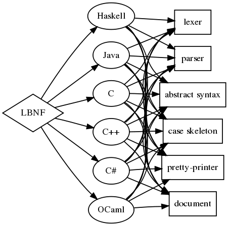

Centre for Language Technology
Chalmers University of Technology and University of Gothenburg
The BNF Converter is a compiler construction tool generating a compiler front-end from a Labelled BNF grammar. It is currently able to generate C, C++, C#, Haskell, Java, and OCaml, as well as XML representations.
Given a Labelled BNF grammar the tool produces:
Binary executables:
Source package:
Source repository at GitHub:
git clone https://github.org/bnfc
Install by Cabal from Hackage:
cabal install bnfc
|
bnfc -haskell Calc.bnfc
bnfc -c Calc.bnfc
bnfc -cpp Calc.bnfc
bnfc -java Calc.bnfc
|
 |
A grammar of C. An example C file parsable in type Program.
A grammar of Alfa (For more details, see the Alfa home page.)
A grammar of LBNF. It is at the
same
time an example LBNF file, parsable in type Grammar. This
grammar is used in the implementation of the BNF Converter.
A grammar
of Java 1.1 developed by Mike Rainey